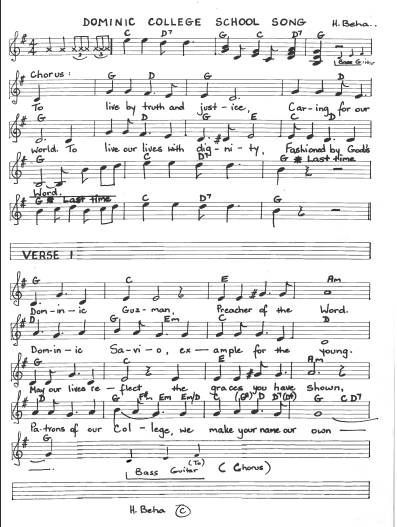
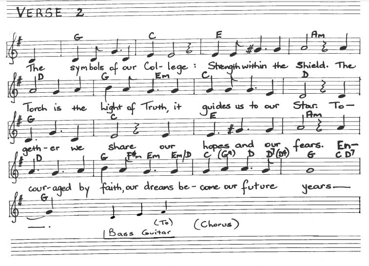

History of the Arrival of the Salesians in Glenorchy
When the Salesians first came here in 1946, the only buildings on our school site were the white house, known as Grantleigh, and some apple sheds.
There were 26 students in 1946 when the first Salesians arrived. Today we have 1,000 students and 130 staff. While the school has grown and expanded and continues to grow right now, with the building of the K-2 precinct, some things haven’t changed. We have always been and continue to be a tight knit community:
A home that welcomes
A school that prepares for life
A parish that evangelizes and prays together
And we create a playground where friends meet.
The earliest of the College’s bells is this slim, black bell used by the Salesians of Don Bosco since 1952 from our Boys Town days and then from 1956 used with the boys in Savio College. This bell was used on this site to signal the start of the day, recess and lunch time and the end of the day. Today we remember and pray for all those who heard this bell as part of their lives and the pattern of their days.
This bell was used since 1959 by the Dominican Sisters at our primary school which was once called St John's and was located where Guilford Young College is today. Our Kinder to Year 6 moved here to our Tolosa Street site in 2004. This bell too was used to communicate the start and finish of the school day and breaks for students.
Our third bell began to be used in 1962 when the Dominican Sisters started the first secondary classes for girls at Holy Name College. Holy Name was located where Guilford Young College is today. Our boys began to hear this bell in 1967 when they commenced having classes with the girls before we became Dominic College.
The final historic bell is our Angelus Bell, installed and blessed by the Salesian Rector Major, Fr Egidio Vigano when he visited Dominic College in October 1982.
This bell was used in the College to call the community to prayer every day at midday. This custom dates back to the end of the 16th century.
In the Catholic tradition, the Angelus calls us to interrupt our daily, routines and turn our thoughts to God and Mary, the mother of Jesus for encouragement and inspiration. Today we especially remember all Old Scholars of the College; students who have studied, worked and played in our classrooms and grounds before we came to the College. We pray that they have become good Christians and honest citizens.
75th Anniversary Commemorative Bell
To mark the occasion of the 75th Anniversary of the arrival of the Salesians of Don Bosco in Glenorchy, the College has acquired a commemorative brass bell, made here in Australia.
The bell has a unique handle that has been fashioned by Brother Barry Parker SDB. The wood for the handle is specially selected local Glenorchy myrtle wood. Brother Barry carved the handle in our Brother Peter Dezani Design Centre. Today we especially remember and pray for all of our students in Kindergarten to Year 10 who are the lifeblood of our College.
Our Song

The Dominic College Song made its original debut in 1989. It was written and composed by Helen Harvey, formerly Helen Beha, who began her association with the College in 1976 when her son began Prep. Helen’s journey with the College spanned 14 years as a parent, teacher and friend.
For the initial 16 years, Dominic College was without a school song. Helen understood the importance of a school song as an anthem of ownership and a means of stating the school’s ethos, traditions and beliefs. She wrote the song to include the patron saints knowing that the song would serve as a bond and a source of pride, hope and patriotism. The exterior brickwork of out Fra Angelico is enhanced with a digital byte from the College Song.
Since its inception, our school song continues to bond us as a Salesian community bringing together present-day staff, students and families as well as our Old Scholars and our Salesian mentors and guides from across the years.